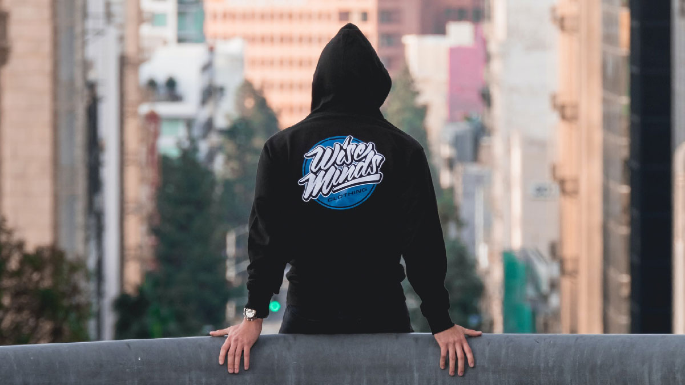
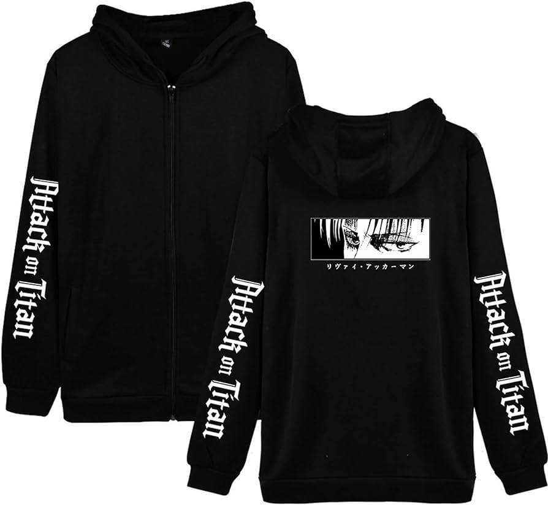
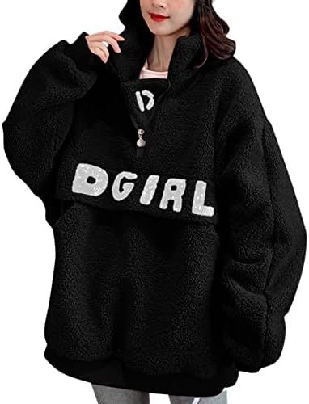
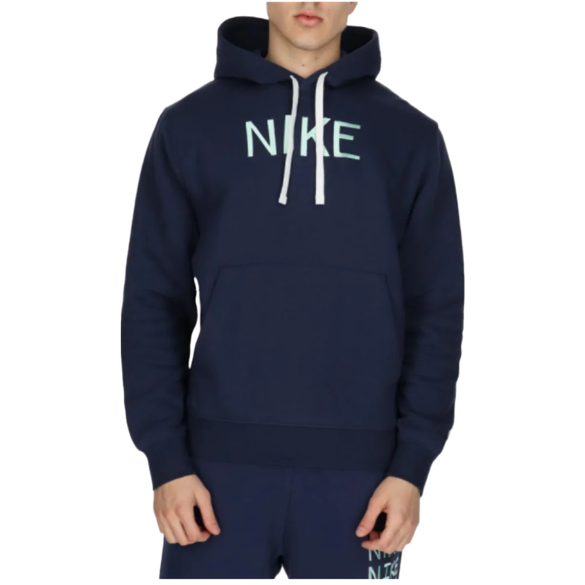
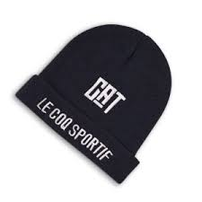

Moda Juvenil
¿Cuál es la moda de los jóvenes hoy en día?
Streetwear y Sportswear, una tendencia única de moda
Los jóvenes adolescentes ahora quieren vestirse cómodos. Por eso los estilos streetwear y sportswear se fusionan cada vez más. Debes elegir el look que te gusta y, sobre todo, con lo que te sientes cómodo.




Accesorios
Te mostramos algunos de los accesorios claves para esta temporada
